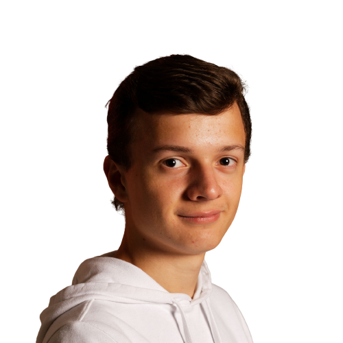

— Je suis Julien Perriguey.
Etudiant en BUT Informatique
Après avoir obtenu un BAC Général avec les spécialités Mathématiques et Numérique & Sciences Informatiques (NSI)L'enseignement de spécialité Numérique et Sciences Informatiques propose d'étudier l'informatique et est particulièrement centré sur l'apprentissage de la programmation. Elle permet donc d'en apprendre les bases, pour élaborer des logiciels, des sites internet, ou encore des applications. , j'ai choisi de poursuivre mon cursus scolaire vers des études en informatique. Je suis alors devenu étudiant en première année de BUT informatique à l'IUT de Lannion.
Passionné par la conception et la réalisation de sites et d'applications web, j'ai pour objectif de devenir développeur web professionnel. Pour y parvenir, je souhaite poursuivre vers une deuxième et troisième année de BUT, en alternance.